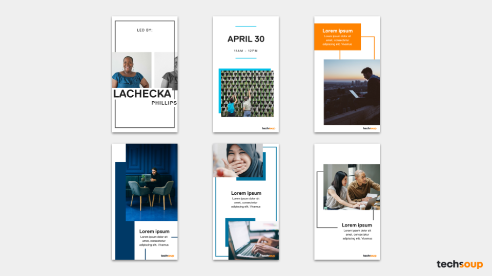
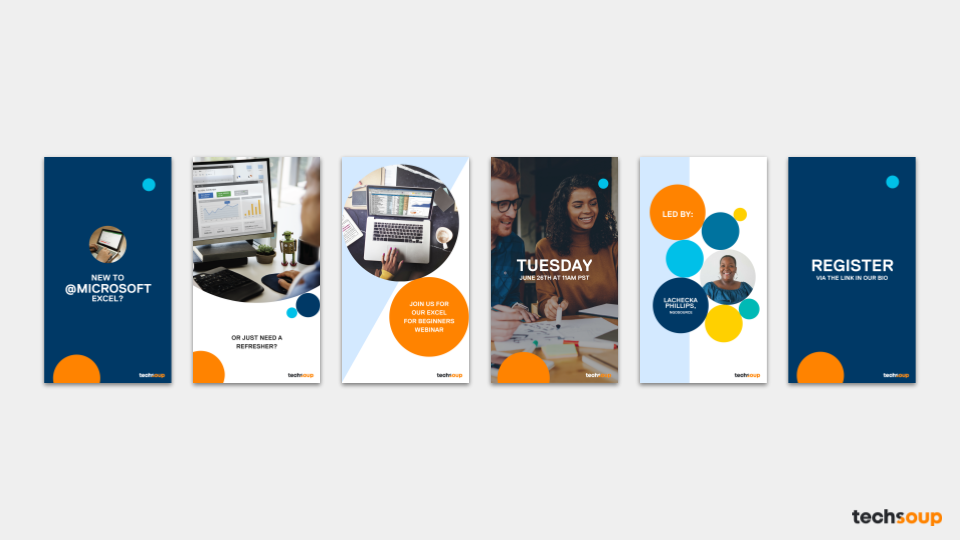

I interned for TechSoup, a social enterprise that sells a plethora of tech products and provides tech services for discounted prices to nonprofits, the summer after my first year in college. I came on board as a graphic design intern and worked on: creating social media assets, launching an integrated marketing campaign to drive nonprofit registration with other fellow interns, and eventually published my own blog post under Techsoup's blog.
Adobe Creative Cloud offers a wide range of applications used to create just about anything you'd like to produce at your nonprofit. However, sometimes it's difficult to decide which tool is best for a specific project. This handy infographic helps guide you through the process.
Originally, a blog post was published three years ago by Techsoup with a short quiz that would determine which Creative Cloud app is the best fit for a nonprofit's project. However, the quiz had a few glitches in the pathway and new Creative Cloud app products had since been added. Thus, I was tasked to recreate this quiz but in infographic form, so users could see all the products available but also go through the infographic to find the most applicable product for the task on hand. The design process involved collaborating with my manager on redesigning the pathways to certain Adobe products and a lot of rearrangement while keeping heirarchy and digestable layout in mind.
Human/Photograph-Centered Instagram Stories Template
Corporate Themed Instagram Stories Template
Webinar Promotion Instagram Stories Template
Techsoup hosts free webinars for its partner nonprofits all over the world and wanted to increase engagement with its users. With TechSoup's increasing social media presence, I was given the task to create templates for instagram stories that would not only promote webinars and TechSoup deals but also share impact stories and nonprofit storytelling content. I created three categories of templates shown above which could be customized for their specific purposes and also pushed the boundaries by creating moving Instagram stories and posts shown below.